Технології для розвитку бізнесу
Власна R&D-команда всередині великої мережі мультимаркетів «Аврора». Створюємо, перевіряємо й масштабуємо рішення на реальному операційному полігоні — наразі робимо їх доступними для вашого бізнесу.
Три формати роботи
Готові рішення
Рішення, перевірені на власній мережі мультимаркетів, що швидко зростає.
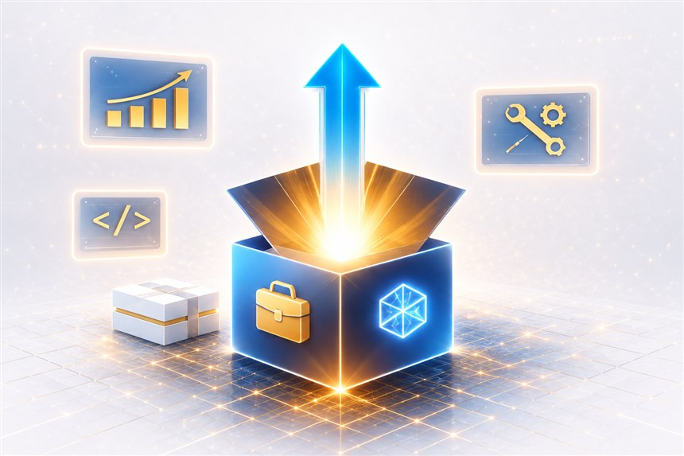
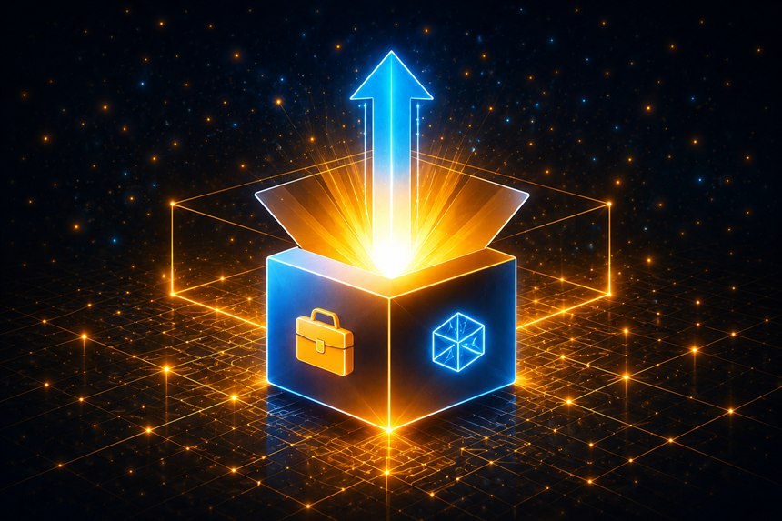
Консалтинг
Управління змінами, налаштування процесів і робота з даними.
- Проєктне управління: PMBOK, Agile, Scrum, Kanban
- Бізнес-аналіз і процесний аудит AS-IS → TO-BE
- PMO, портфельне управління, менторинг команд
- Опис, моделювання (BPMN) та автоматизація процесів
Розробка під ключ
Кастомні продукти з глибокою доменною експертизою рітейлу.
- Глибокий аналіз проблематики та формування візії продукту — швидка перевірка гіпотез — масштабування
- Operations, BI-аналітика, AI/ML рішення
- Побудова API, ESB та надійна інтеграція з існуючими системами
- Архітектура й проєктування рішення під навантаження та супровід до робочого результату
Продукти, що вже працюють в «Аврорі»
Traffic Counter
Аналітика зовнішнього трафіку та конверсії у відвідування і покупки на базі відеоаналітики й ML.
Детальніше →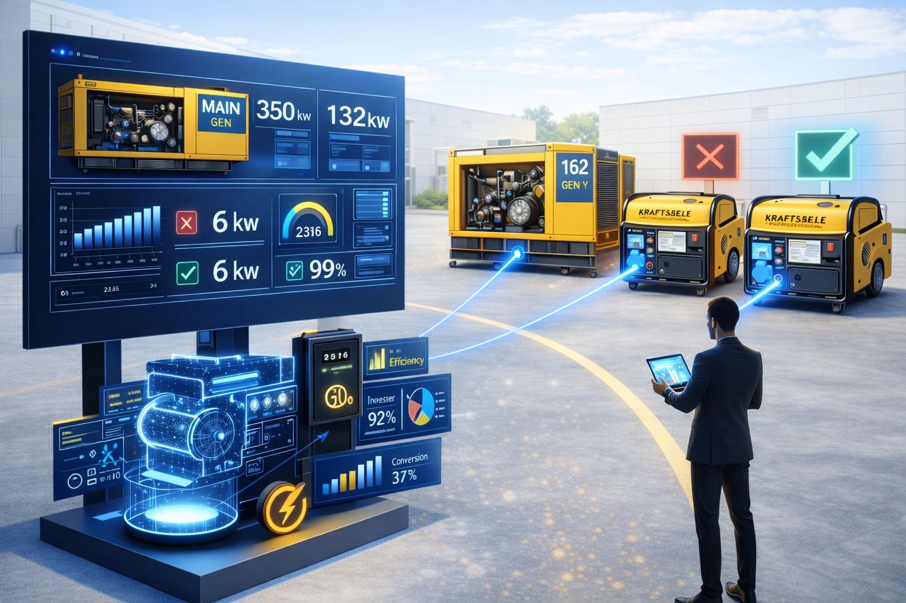
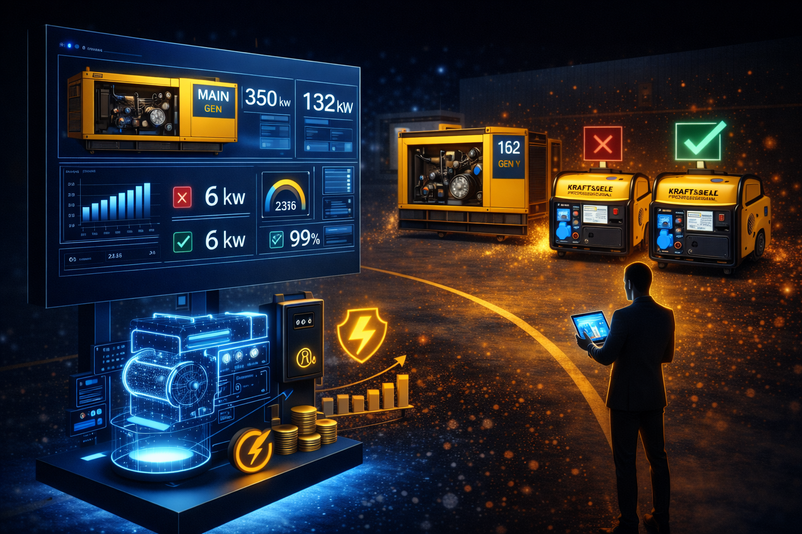
Контроль генераторів
Моніторинг стану генераторів, облік мотогодин і планування ТО в реальному часі.
Детальніше →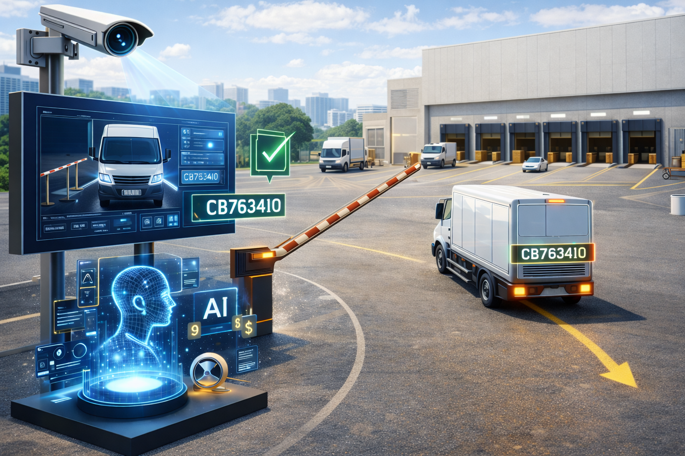
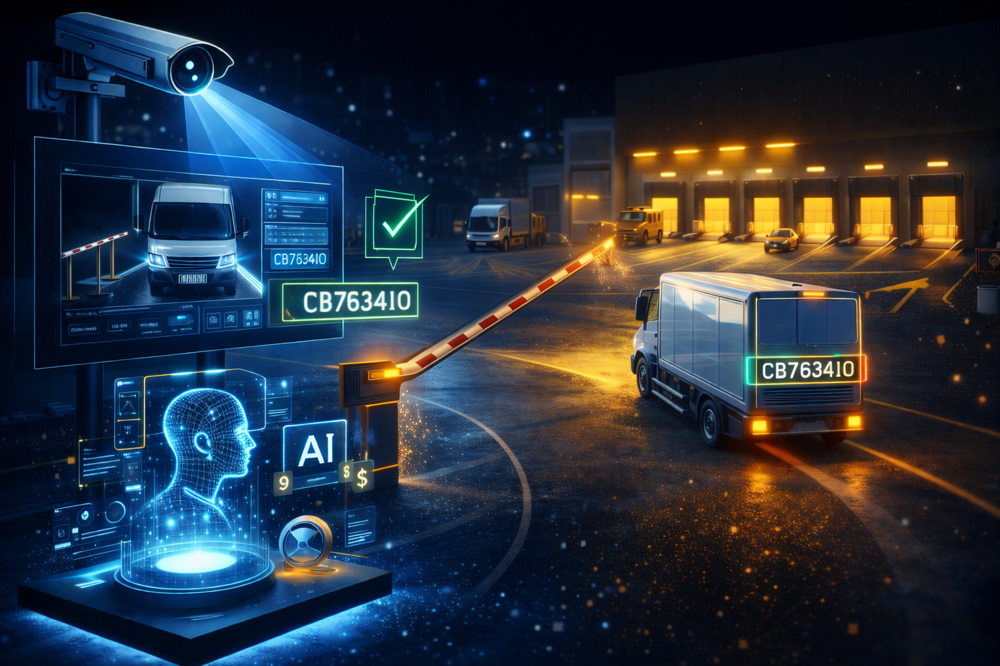
LPR & Access Control
Розпізнавання номерів, автоматичний допуск і керування КПП та логістичними потоками.
Детальніше →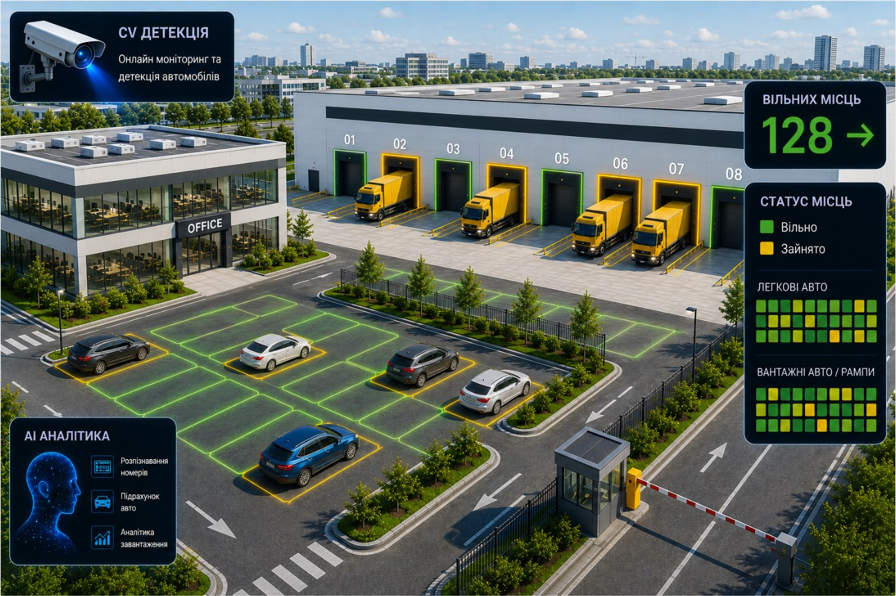
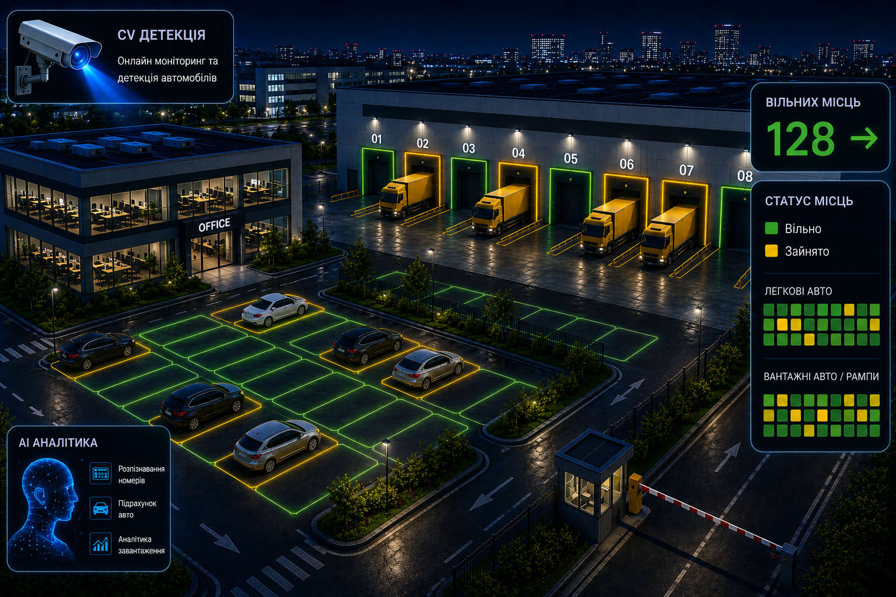
Smart Parking
Контроль парковок та аналітика завантаженості території.
Детальніше →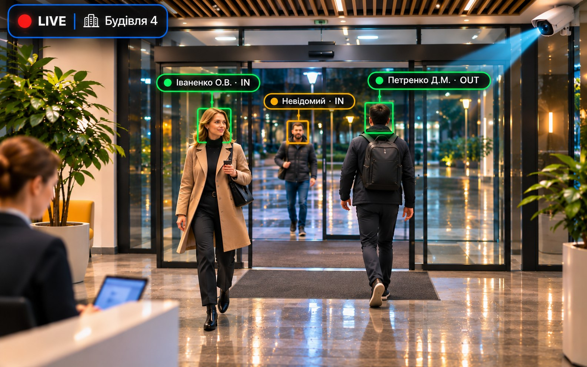
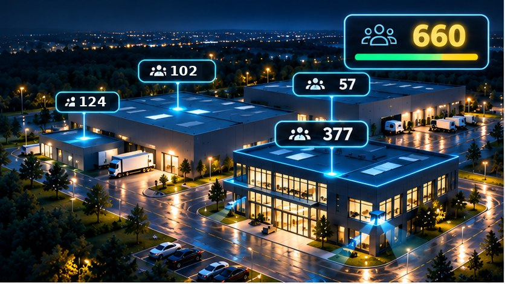
Розумний контроль входу до будівлі
Face Tracking: розпізнавання облич на проходах IN / OUT і live-підрахунок людей у кожній зоні об'єкта.
Детальніше →Консалтинг: від стратегії до автоматизації процесів
Розвиток компетенцій
Проєктне управління
Методології PMBOK, Agile, Scrum, Kanban.
Бізнес-аналіз
Виявлення вимог, документування, робота зі стейкхолдерами.
Процесний аналіз
Аудит стану (AS-IS) та проєктування (TO-BE).
Стратегія та тактика
Стратегічний рівень
Побудова офісів управління проєктами (PMO), портфельне управління.
Тактичний рівень
Супровід проєктних команд, менторинг керівників.
Впровадження змін
Change Management і підтримка переходу до нових підходів.
Оптимізація та автоматизація
Опис процесів
Створення регламентів та карт процесів.
Моделювання BPMN
Візуалізація логіки виконання робіт для прозорості.
Автоматизація
Перехід від ручної праці до цифрових інструментів.
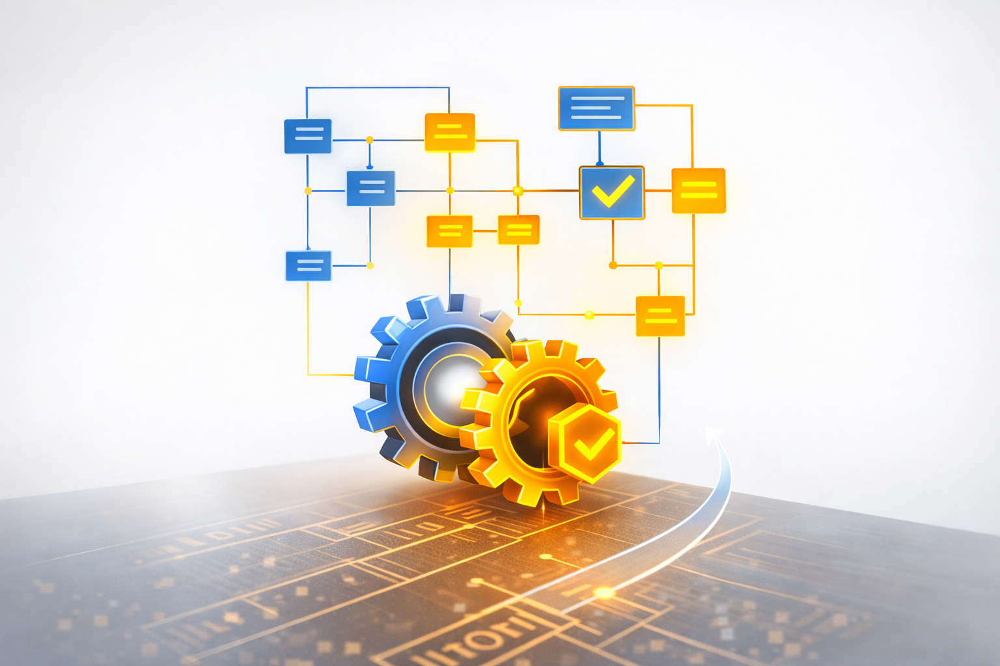
Розробка під ключ: від ідеї до робочого продукту
Від ідеї до продукту
Discovery Phase
Глибокий аналіз проблематики та формування візії продукту.
MVP & Scaling
Швидка перевірка гіпотез (PoC) → масштабування рішення.
Рітейл зсередини
Operations
Магазини, склади, РЦ, логістика «останньої милі».
Tech & Data
E-commerce, ціноутворення, BI-аналітика та AI/ML рішення.
Надійність і супровід
Architecture
Побудова API, ESB та надійна інтеграція з існуючими системами.
Супровід до результату
Проєктування рішення під навантаження та супровід до робочого результату.
Ми відкриті до співпраці
Адаптація готового рішення
Беремо нашу перевірену розробку й налаштовуємо під ваш бізнес-кейс і IT-контур.
Пілот
Перевіряємо вашу гіпотезу в реальному операційному середовищі й разом оцінюємо бізнес-ефект.
Спільна розробка
Ваша галузева експертиза плюс наша R&D-команда й досвід впровадження — народжується новий продукт.
R&D-проєкт під задачу
Досліджуємо, проєктуємо й реалізуємо рішення під ваш запит — від discovery до запуску.
Комерціалізація
Якщо продукт має потенціал ширшого ринку, розвиваємо його разом і ділимо результат.
Ваше рішення — на нашу мережу
Маєте готовий продукт? «Аврора» стає замовником і полігоном: 1900 магазинів і 16 000 користувачів.
Кому це актуально
Ритейл і мережі
автоматизація, аналітика й масштабування процесів
Виробники та дистриб'ютори
робота з продажами, залишками, попитом і даними
Технологічні компанії
галузевий партнер для пілоту й виходу на ринок
Стартапи
доступ до мережі 1900 магазинів як полігону
Інвестори
продукти з реальної операційної практики, не з лабораторії
Корпорації
спільні рішення на перетині технологій і рітейлу
Експертиза, яку видно не лише всередині компанії
Forbes University 2026
На Forbes University говорили про співпрацю «Аврори» з ВНЗ, можливості студентів у R&D і програму Aurora Students. Понад 300 лідерів бізнесу й освіти, AI-трансформація та розвиток талантів.
Детальніше →Lviv AI Day 2026
Панельна дискусія «AI revolutionizing everything. Are you ready?» — команда «Аврора» серед спікерів про практичне впровадження ШІ в реальному бізнесі.
Перейти на Lviv AI Day →Форум підприємців 2026
Говорили про співпрацю бізнесу з R&D «Аврори» — формати партнерства й спільної розробки.
Перейти на форум →RAU Expo 2026
Розповідали про технології, що розвивають бізнес, і показали власні 4 R&D-продукти «Аврори».
Дивитися стенд →Spring Kyiv PM Day 2026
Євгенія Кучеренко, керівниця проєктно-процесного офісу, з доповіддю «42 причини, чому проєктам потрібні процеси» — про перехід від хаотичних запитів і ручного управління до прозорих масштабованих процесів і єдину воронку R&D-ідей.
Детальніше →Києво-Могилянська академія
Альона Митрофанова та Олександр Войналович розповіли студентам про можливості в R&D «Аврора» — реальні продуктові й дослідницькі задачі, а не навчальні симуляції.
Можливості для студентів →Укртелеком у гостях
Команда «Укртелеком» завітала до процесно-проєктного офісу «Аврора»: обмін досвідом з управління проєктами й процесами та цифрової трансформації.
Aurora Lean Fest 2026
Щорічна подія про культуру постійних покращень (Lean): команда R&D і колеги діляться практиками ощадливого виробництва та ефективних процесів.
Forbes AI Summit, Львів
Команда Аврора показала, що AI для нас уже не майбутнє, а сьогодення: GenAI та Computer Vision працюють у магазинах і бек-офісі, аналітика трафіку пришвидшує рішення, автоматизація зменшує рутину.
Перейти на Forbes →RAU Workshop
Платформа Retail Association of Ukraine, 11 вересня 2025, Kyiv Hall. Панель про цифрову трансформацію фізичних магазинів і практичні зміни в офлайн-ритейлі.
Перейти на RAU →Retail Expo 2025
Говорили про те, як «Аврора» змінює ритейл завдяки технологіям і людяності: інтеграція AI у щоденну роботу, асистенти для клієнтів і співробітників, аналітика трафіку.
Перейти на Retail Expo →Студенти в команді R&D
У команді Аврора R&D працюють студенти в межах програми — не в навчальних симуляціях, а над реальними продуктовими й дослідницькими задачами.
Історія програми →Aurora Lean Fest 2024
Щорічна подія про культуру постійних покращень (Lean): команда R&D і колеги діляться практиками ощадливого виробництва та ефективних процесів.
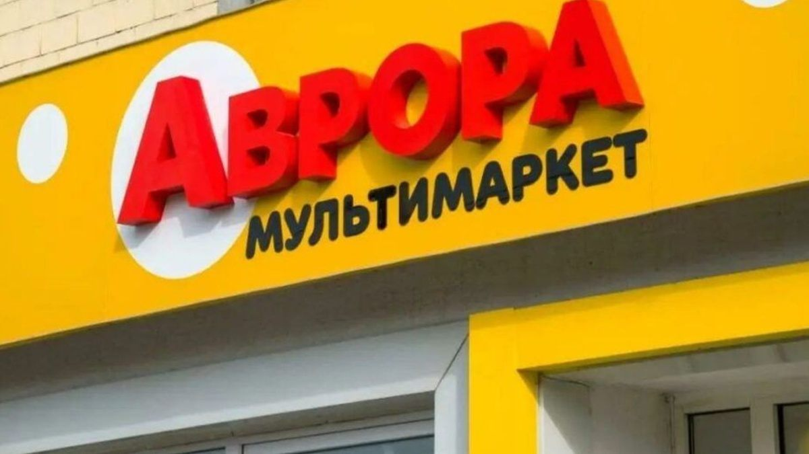
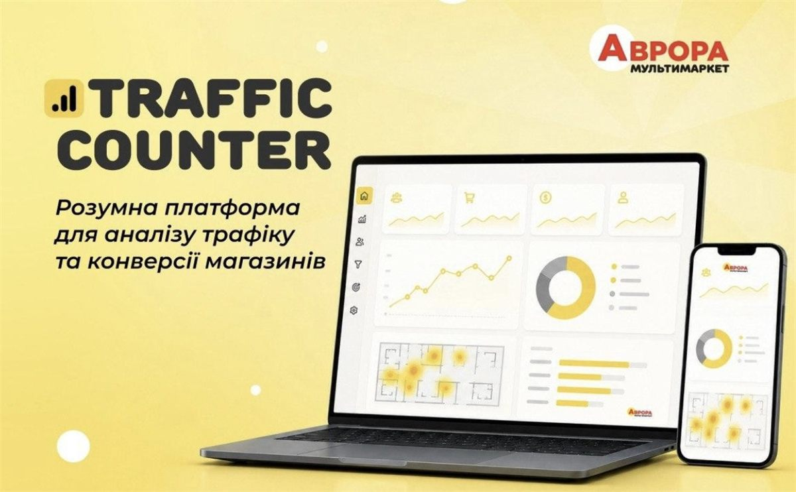
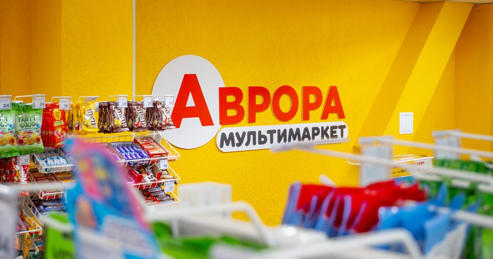
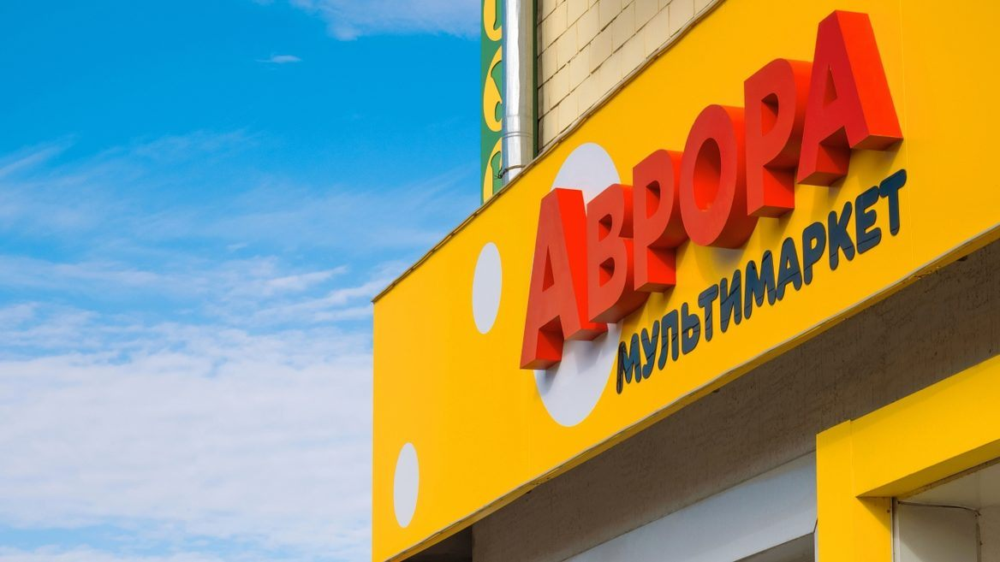
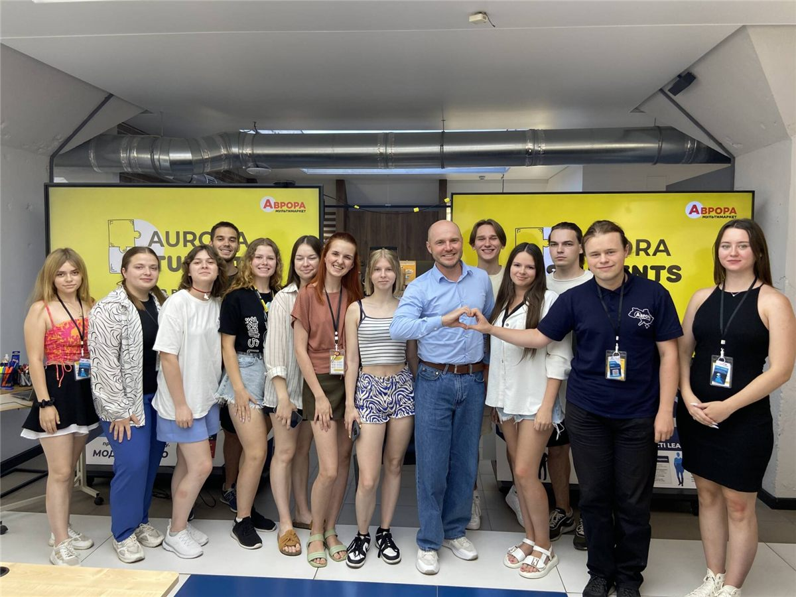
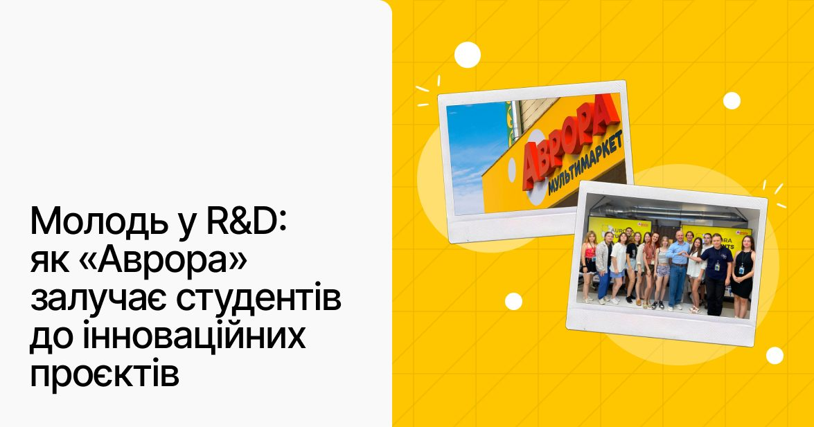
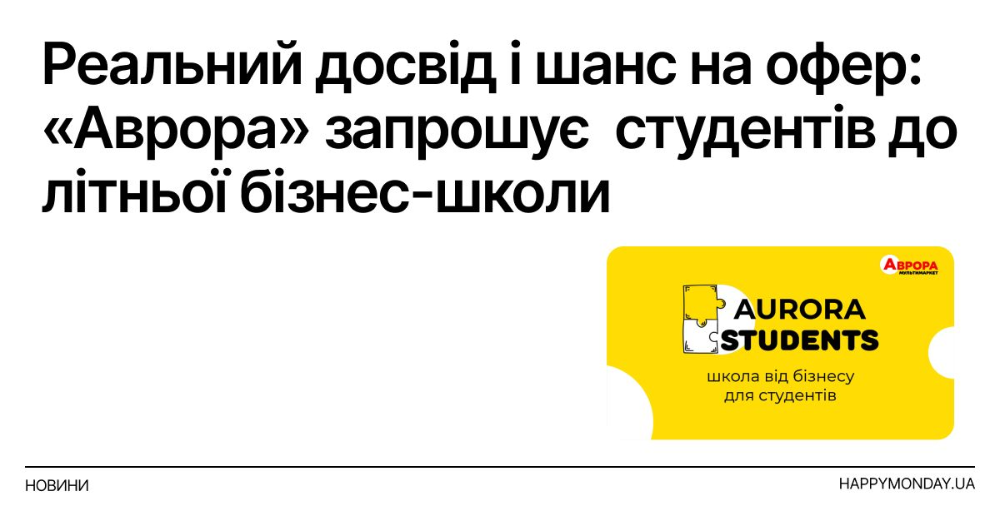
Анкета
З якої задачі почнемо співпрацю?
Кілька запитань, щоб зрозуміти ваш контекст і запропонувати формат співпраці.
Перетворюємо технології на конкурентну перевагу.
Адаптуємо чи створимо рішення для вас або разом з вами.